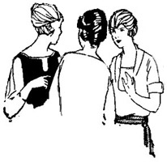

Corporate Confab
You have arrived at the corporate pages for Vintage Sewing Reference Library, Inc. In this section we will answer some basic questions about our decision to incorporate and provide access to the various corporate documents to which the public is entitled.
FAQ—The frequently asked questions about our decision to incorporate.
Articles of Incorporation—as submitted to the state of California in March 2004.
Bylaws—as adopted by our Board of Directors.
Finances—Our budget (including assumptions), expenditures, and other summary statements.
Annual Report—To be published in November.